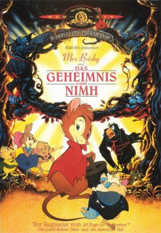

#1879 Mrs. Brisby und das Geheimnis von NIMH
Alternativ: The Secret of NIMH
 
 IMDB-Wertung: 7.6 / 10
IMDB-Wertung: 7.6 / 10  Metascore: 76
Metascore: 76 
Die verwitwete Feldmausdame Mrs. Brisby will mit ihren Kindern umziehen, weil bald der Bauer das Feld pflügen wird. Ihr Jüngster leidet an Lungenentzündung. In ihrer Not wendet sie sich an Rabe Jeremy und eine Eule, die sie an Nicodemus und seine Ratten verweisen, die unter einem Rosenbusch hausen. Die Ratten von NIMH (National Insitut of National Health) sind intelligente Laborratten, die Mrs. Brisbys Umzug vorbereiten. Vorher müssen sie die Forscher, die sie ausrotten wollen, überlisten. Mrs. Brisbys Umzug bringt die Lösung aller Probleme.
Jahr: 1982
Dauer: 82 Minuten
FSK: 6
Land: USA Studio: United ArtistsTonspuren:
Untertitel:
Auflösung: 1080p (1920x1040) Größe: 9533 MB
Genre: Animation/Trick, Abenteuer, Drama, Familie, Fantasy, Sci-Fi
Regisseur: Don Bluth
Drehbuch: Robert C. O'Brien, Don Bluth, John Pomeroy, Gary Goldman, Will Finn
Soundtrack: Jerry Goldsmith
Darsteller:
Datei: X:\Kinder Filme (G-M)\Mrs. Brisby und das Geheimnis von NIMH (1982, FSK6, 1920x1040).mkv seit 30.08.2015
Festplatte: Kinder-Filme+Trick
 Es gibt insgesamt 84 Filme in der Gruppe 'Kinder Filme (G-M)'
Es gibt insgesamt 84 Filme in der Gruppe 'Kinder Filme (G-M)'